Contents
6.7. Redis—App后台高性能的缓存系统¶
用户对App后台的响应速度要求越来越高。把数据存储在硬盘上，由于受到硬盘读写速度的限制，因此数据读写的速度有限。内存比硬盘的读写速度高了一个数量级，因此基于内存的数据读取也比硬盘提高了一个数量级，而Redis正是基于内存存储数据，保证了数据快速的读写速度。同时Redis提供了丰富的数据类型（string、hash、list、set及zset），给开发者带来了很大的便利。
6.7.1. Redis简介¶
MySQL被广泛用于数据存储，但MySQL读写速度慢，随着移动互联网的发展，越来越多的业务场景需要满足下面的需求。
·少量数据需要被经常读写，同时对读写速度要求非常高。
·能提供丰富的数据结构。
·提供数据落地的功能。
所下表所展示了计算机中主要存储介质的访问速度。
计算机中主要存储介质的访问速度
介质 |
时间 |
|---|---|
内存寻址 |
100纳秒 |
从内存中顺序读取1MB的数据 |
250000纳秒 |
磁盘寻址 |
250000纳秒 |
从磁盘中顺序读取1MB的数据 |
20000000纳秒 |
从内存中顺序读取1MB的数据耗时250000纳秒，从磁盘中顺序读取1MB的数据耗时20000000纳秒，内存的读取速度是硬盘的读取速度的80倍。因此可以通过把内存数据存储在内存来提升系统的性能
Redis就是一个满足上面需求的开源Key-Value内存存储系统。Key-Value存储系统在写入的时候，通过指定Key及其对应的Value；读取的时候，通过指定Key就能读取Value的值。Redis有以下的特点
·全部的数据操作在内存，保证了高速的读写速度。
·提供丰富多样的数据类型：string、hash、list、set、sorted set、bitmap和hyperloglog。
MySQL被广泛用于数据存储，但MySQL读写速度慢，随着移动互联网的发展，越来越多的业务场景需要满足下面的需求。
少量数据需要被经常读写，同时对读写速度要求非常高。
能提供丰富的数据结构。
提供数据落地的功能。
如表7-1所示展示了计算机中主要存储介质的访问速度。
表7-1 计算机中主要存储介质的访问速度
介质 时间
内存寻址 100纳秒
从内存中顺序读取1MB的数据 250000纳秒
磁盘寻址 10000000纳秒
从磁盘中顺序读取1MB的数据 20000000纳秒
读者在表7-1中可了解，从内存中顺序读取1MB的数据耗时250000纳秒，从磁盘中顺序读取1MB的数据耗时20000000纳秒，内存的读取速度是硬盘的读取速度的80倍。因此可以通过把内存数据存储在内存来提升系统的性能。
Redis就是一个满足上面需求的开源Key-Value内存存储系统。Key-Value存储系统在写入的时候，通过指定Key及其对应的Value；读取的时候，通过指定Key就能读取Value的值。Redis有以下的特点。
·全部的数据操作在内存，保证了高速的读写速度。
·提供丰富多样的数据类型：string、hash、list、set、sorted set、bitmap和hyperloglog。
·提供了AOF和RDB两种数据的持久化方式，保证了Redis重启后数据不丢失。
·Redis的所有操作都是原子性，同时Redis还支持对几个操作合并后的原子性操作，也即支持事务。
Redis丰富多样的数据类型给数据存储提供了一种新的思路，其让广大的开发者存储数据的时候，不用再面对功能单一的数据库，开发者能利用Redis提供的灵活多变的数据结构和数据操作更巧妙地存储数据。
6.7.2. Redis的常用数据结构及应用场景¶
Redis 5种常用的数据结构（string、hash、list、set、sorted s et），以及这些数据结构所适用的业务场景。
string——存储简单的数据¶
1．简介¶
string类型是Redis中最基本的数据类型，其在Redis中是二进制安全，意味着这种数据类型可以接受任何格式的二进制数据，例如一张JPEG格式的图片或者JSON格式的字符串。在Redis中字符串类型最多可以容纳的数据长度是512MB。
2．数据模型¶
string类型是基本的Key-Value结构，Key可以看作某个数据在Redis中的唯一标识，Value是具体的数据。下表展示了基本Key-Value数据模型：
基本Key-Value数据模型
Key |
Value |
|---|---|
“name” |
“hujianli” |
“city” |
“wuhan” |
3．应用场景¶
由于string类型灵活，可以存储大量的数据，所以在App后台中，string类型经常会用来缓存数据。例如App中常见的商品分类栏，这类界面的特点是：访问频率高，数据不经常变动（可能几天）。所以为了提高这个界面的访问速度，把这个界面的数据放在Redis的一个Key-Value结构中，一般情况下App后台就从这个Key读取数据；当这个界面的数据发生变化时，用新的数据覆盖这个Key的数据。
假设这个界面的数据对应的Key是“category”，Value为这个界面的JSON数据 则Redis中对应的模型如表
分类界面对应的Key-Value
Key |
Value |
|---|---|
“category” |
{“常用分类”:……，“潮流女装”:……，…} |
当App端需要通过API获取这个界面的JSON数据时，API请求到达App后台通过Redis获取Key“category”对应的值，命令如下。
get category
一般来说，App端为了在网络不可用的时候也有良好的用户体验，会在App本地也缓存一份数据，整个流程如图 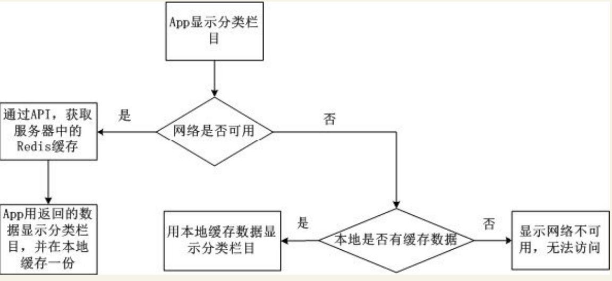
string这种数据类型可以用如下的两种模式的string表示，在这里分析这两种方式的问题所在。
第一种用string表示的数据模型¶
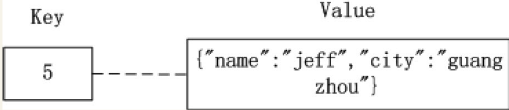
第一种方式，Key是用户的id为5，Value是一个JSON格式的字符串，这种方式的缺点是存储或获取Value时， 把对象变为JSON格式或者把JSON格式变为对象需要额外的性能开销。 另外如果开发者只需要修改Value中的name值，在这种格式中，开发人员必须要先获得city值， 才能把其转化为符合Value格式的JSON值，增加了没必要的性能开销和复杂性。
第二种用string表示的数据模型如图¶
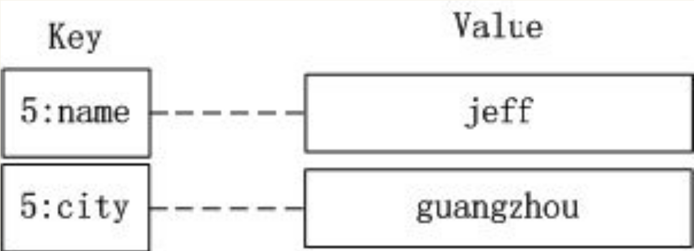 第二种方式，有多少组用户属性就用多少个Key-Value对象，用户id“5”加上对应的属性名来作为Key，属性值作为Value。这种方式存取或获取数据，虽然免去了如第一种方式JSON/反JSON的开销，但是在内存方面的开销还是比hash的大（通过在Redis配置文件中优化“hash-max-zipmap-entries”和“hash-max-zipmap-value”这两个参数可以让hash更省内存）。
hash——存储对象的数据¶
1．简介¶
hash类型很接近数据库模型，hash的Key是个唯一值，Value部分是个hashmap的结构。
2．数据模型¶
在数据库中有这样一行用户数据，如表
用户数据
id |
name |
city |
|---|---|---|
id |
hujianli |
wuhan |
如果要在Redis中用hash结构存储，则数据模型如图
hash数据模型 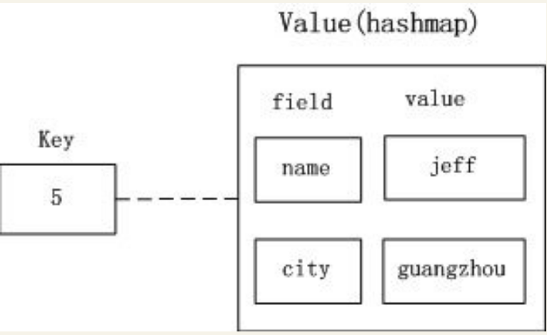
在这个hash数据模型中，Key是用户id为5，Value是个hashmap， hashmap的field（在Redis称内部hashmap的Key为field） 为表中的属性名（name，city），hashmap的Value为表7-4中的属性值（jeff和guangzhou）。 后台对hash数据的保存和存储，可以通过Key （用户id）+field（属性名）来操作。
3.应用场景¶
App后台常见的功能是根据用户的id获取用户的信息。例如，根据用户的id获取用户的昵称、头像、所在地等信息。一般用户的信息是存储在数据库中，对于这种高频的数据访问，不可能每次获取这些信息都读取数据库，自然而然开发人员会考虑到把用户的信息存储在Redis的hash中.
如图 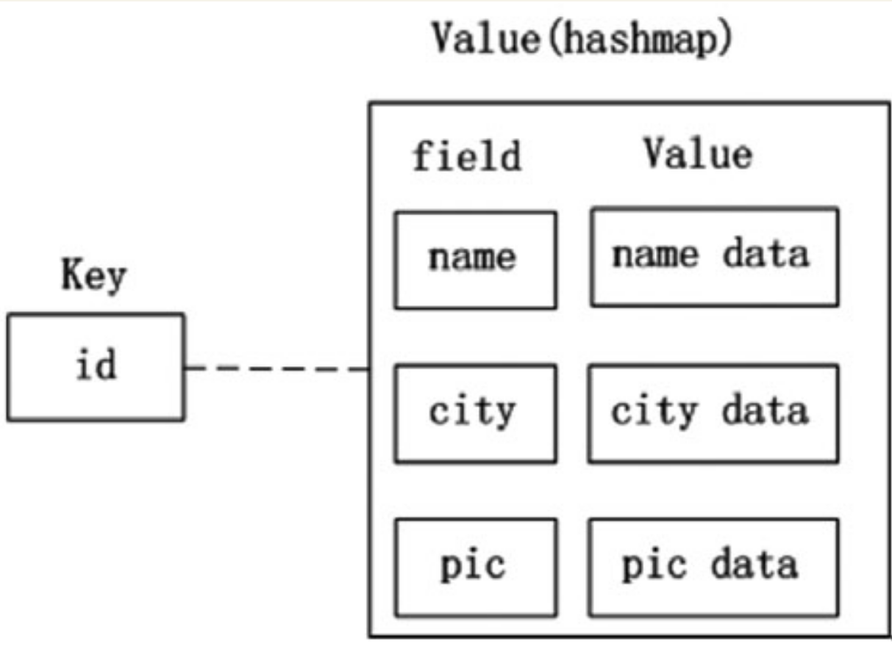 获得用户id后需要获取用户的数据，用hgetall命令获取id下所有的field和value，命令如下：
hgetall id
注意： 如果修改了数据库的用户数据，也要把这些数据同步更新到Redis，用来防止Redis和数据库的数据不一致。
list——模拟队列操作¶
1．简介¶
Redis中list是按照插入顺序排序的字符串链表，可以在头部和尾部插入新的元素（即队列结构）。插入元素时如果该Key不存在，Redis会为该Key创建一个新的链表，如果链表中所有的元素都被移除，该Key也会从Redis中移除。
注意：
由于list在Redis中是链表结构，如果在头部或尾部插入新的元素，
即使链表中存储了上百万的数据，性能也非常高效。如果在链表中插入元素，
由于需要根据头部或尾部的指针遍历到链表指定的位置，Redis的插入效率很低。
2．数据模型¶
list的数据模型如图
链表的数据模型 
常见的操作是用lpush命令在list头部插入元素，用rpop命令在list尾取出数据。
3．应用场景¶
在App后台中，Redis也经常被用来作为消息队列，理由如下。
·因为App后台中已经使用了Redis，消息队列也使用Redis可以减少开发人员的维护成本和学习新知识的成本。
·Redis的读写速度能达到每秒上万次，能满足大多数系统的性能要求。
App后台常见的发送短信功能就需要用到队列，因为发送短信的速度慢，所以需要用到队列来实现异步操作
发送短信的架构图 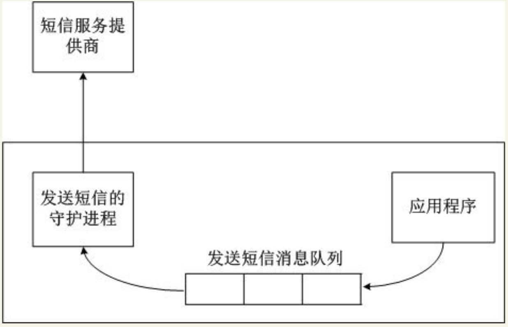
发送短信的过程如下。
（1）应用程序把短信相关的信息（包括手机号、内容）转换为JSON字符串后放入“发送短信消息队列”。
（2）发送短信的守护进程是个在后台不断运行的程序，其不断地检测“发送短信消息队列”是否为空，如果不为空，就把信息从消息队列中取出。
（3）发送短信的守护进程把短信的内容发送短信平台的接口。
set——无序且不重复的元素集合¶
1.简介¶
在Redis中set类型可以看作是没有排序、不重复的元素集合，可以在该类型上添加、删除元素或者判断某一元素存在等操作（这些操作的时间复杂度是O(1)）。
set集合中不允许出现重复的元素，换句话说，如果多次添加相同的元素，set中只保留一份。当用户需要存储很多的数据，但又希望不出现重复的数据，这个特性就非常有用。
另外set类型还提供多个set之间的聚合计算，如求set之间的交集、差集或并集，这些操作是在Redis内部完成，效率特别高。
2.数据模型¶
set类型的数据模型如图
set的数据模型 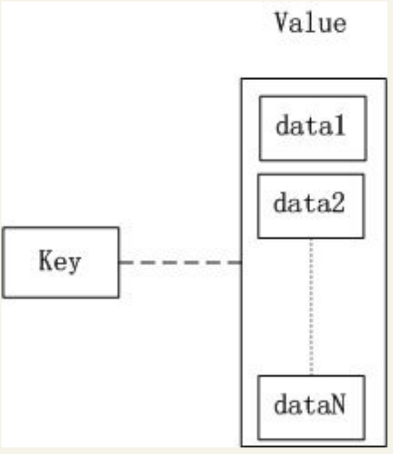
set类型的Value部分是一系列不重复的数据集合。
3.应用场景¶
社交类型的App中，有的App当用户进入了一个用户的主页后会提示共同好友的信息，以方便用户扩展社交关系。提示共同好友的页面如图
获取共同好友的算法如下：把用户a的所有好友取出来遍历，
和用户b的所有好友一一比较，如果相同的话就是共同好友。
上面描述的算法其实就是求两个集合交集。在Redis的set类型的操作中已经包含了求交集的操作sinter。 如果把用户a的好友存储在集合a中，把用户b的好友存储在集合b中，通过求集合a和集合b的交集， 就能获取用户a和用户b的共同好友。
如图中，Redis中用户a的好友集合是“Jeff，Tom，Jack”，用户b的好友集合是“Jack，Terry，Mike”，对用户a和用户b的好友集合求交集，就能得到用户a和用户b的共同好友是Jack。
sorted set——有序且不重复的元素集合¶
1.简介¶
sorted-set类型与set类型非常相似，不允许出现重复的元素。 其主要区别是sorted-set中提供了一个分数（score）与每一个成员对应，Redis根据score对成员进行排序， 而且插入是有序的，即插入后就自动排序。当App后台开发者需要有序且不重复的数据， 选择sorted-set这种数据结构就非常合适。
需要特别注意：sorted-set中的成员是不允许重复，但score是允许重复的。
2.数据模型¶
sorted-set的数据模型如图
sorted-set的数据模型 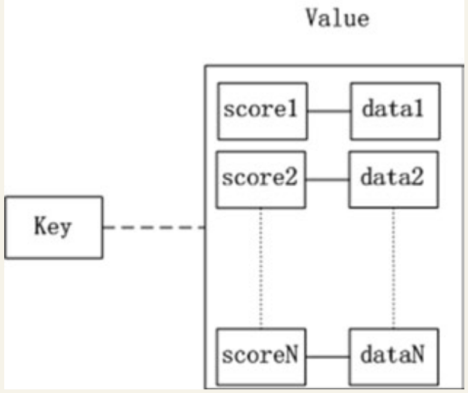
3.应用场景¶
sorted-set类型适用于各种类型的排行榜。
用户如果需要使用sorted-set实现如图的用户人气榜，首先通过下面的命令把用户的数据添加到Redis中。
ZADD key score member
本例中sorted-set的Key是“userTop”，添加数据的过程如下所示。
127.0.0.1:6379>zadd userTop 112 mike
(integer) 1
127.0.0.1:6379>zadd userTop 111 ekin
(integer) 1
127.0.0.1:6379>zadd userTop 104 terry
(integer) 1
127.0.0.1:6379>zadd userTop 179 jeff
(integer) 1
127.0.0.1:6379>zadd userTop 127 tom
(integer) 1
接着通过下面的命令返回索引在start和stop之间的成员列表。
zrevrange key start stop [withscores]
其中start为0表示第一个成员，stop为-1表示最后一个成员，WITHSCORES表示返回的结果中包含每个成员的分数），排序命令如下。
127.0.0.1:6379>zrevrange userTop 0 -1 WITHSCORES
1) "jeff"
2) "179"
3) "tom"
4) "127"
5) "mike"
6) "112"
7) "ekin"
8) "111"
9) "terry"
10) "104"
上面的返回结果已按照分数从大到小排序了。
6.7.3. 内存优化¶
由于Redis在内容中存储数据的特性，Reids会占用大量的内存， Redis的开发者也考虑到这一点，因此在Redis中提供了一系列的参数和方法来监控、控制和优化内存。
监控内存使用的状况¶
在通过Redis的终端命令redis-cli中输入命令“info”可查看Redis的各种统计信息，其中有关内存的统计信息如下。
# Memory
used_memory:12660096
used_memory_human:12.07M
used_memory_rss:14299136
used_memory_peak:15534680
used_memory_peak_human:14.82M
used_memory_lua:31744
mem_fragmentation_ratio:1.13
mem_allocator:jemalloc-3.2.0
在上面展示的参数中，3个重要的内存统计信息的说明如下。
·used_memory_human :以可读格式返回Redis分配的内存总量。
·used_memory_rss :从操作系统的角度，返回Redis已分配的内存总量。这个值的结果，和top命令的输出一致。
·used_memory_peak_human :以可读格式返回Redis的内存消耗峰值。
如果开发者在这里的统计数据中查看到内存使用过多，在不考虑使用Redis分布式存储的情况下，开发者务必要想办法优化Redis内存的使用情况。
优化存储结构¶
Redis的开发者在配置文件中提供了一组参数来控制hash、list、set、sorted-set这些结构的内存存储方式。
在正常的情况下，hash中的value是以hashmap的方式存储，如果hashmap的成员较少，或者hashmap的值的长度较少，会以类似于线性压缩表的方式（Redis中称为ziplist）的方式保存hash的数据，该控制参数对应于Redis配置文件中的下面两项：
hash-max-ziplist-entries 512
hash-max-ziplist-value 64
·hash-max-ziplist-entries：当hashmap内部的成员不超过512时，就采用ziplist的形式存储数据；当hashmap内部的成员超过512时，就采用hashmap的形式存储数据。
·hash-max-ziplist-value：当hashmap内部的成员的长度不超过64时，就采用ziplist的形式存储数据；当hashmap内部的成员的长度超过64时，就采用hashmap的形式存储数据。
注意： 以上两个值任意一个超过了，hash的存储方式就会转换为hashmap。
当hash采用ziplist存储数据时，数据模型如下
Redis配置文件中下面这些参数的含义也是类似，分别控制list和zset是否采用ziplist的存储方式，set是否使用intset的存储方式来节省内存。
list-max-ziplist-entries 512
list-max-ziplist-value 64
set-max-intset-entries 512
zset-max-ziplist-entries 128
zset-max-ziplist-value 64
当list采用ziplist存储数据时，数据模型如下。 
当zset采用ziplist存储数据时，数据模型如下。
注意： set使用了intset的结构来节省内存，intset数据模型如图
上面的这些参数值不是设置得越大越好，例如，hash的数据结构中如果用hashmap存储数据，查找和操作的时间复杂度都是O(1)，采用了ziplist后，由于ziplist是个线性表结构，查找和操作的时间复杂度会变成O(n)。如果数据成员量不大，则影响不大，当数据成员量变大后，则会严重影响性能。开发者需要在时间和空间之间认真衡量怎么设置上面所述的参数。 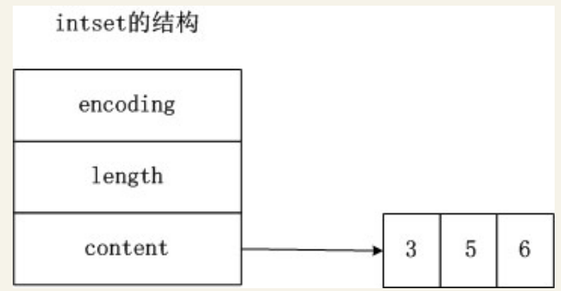
限制使用的最大内存¶
如果Redis因为使用了过多的物理内存而导致使用交换分区后，很容易导致Redis崩溃。为了防止Redis使用过多的物理内存，可以通过配置文件中“maxmemory”的参数限制Redis使用的物理内存。
当Redis使用的物理内存达到了限制值，任何write操作（比如set）会触发“数据清除策略”， 通过配置文件中的“maxmemory-policy”来采用特定的“数据清除策略”， Redis中定义的数据清除策略如下。
·volatile-lru：对设置了过期时间的数据，将过期的数据移除，或者按照LRU（先进先出）算法移除。如果移除后的空闲内存还不满足写入数据所需的内存空间，则提示写入异常。
·allkeys-lru：对所有的数据采用LRU（先进先出）算法。
·volatile-random:：对设置了过期时间的数据，采取“随机选取”算法移除数据。如果移除后的空闲内存还不满足写入数据所需的内存空间，则提示写入异常。
·allkeys-random：对所有的数据采取“随机选取”算法移除数据，直到空闲内存满足写入数据所需的内存空间为止。
·volatile-ttl：对设置了过期时间的数据采取TTL算法(最小存活时间) ，移除即将过期的数据。
·noeviction：不做任何干扰操作，直接返回写入异常。
设置过期时间¶
Redis中可以通过下面的命令设置Key的超时时间。
EXPIRE key seconds
超过超时时间后，该Key与对应的数据会被Redis删除。通过删除过期的Key，可以在一定程度上优化内存的使用。
当设置了超时时间的数据被修改后，设置的超时时间会失效。
在Redis的每个数据库中（Redis有16个db，默认是使用db0），会使用下面的数据模型记录下所有设置了过期时间的Key和过期的时间（用时间戳表示，时间戳精确到毫秒）， 如图：
设置了过期的Key 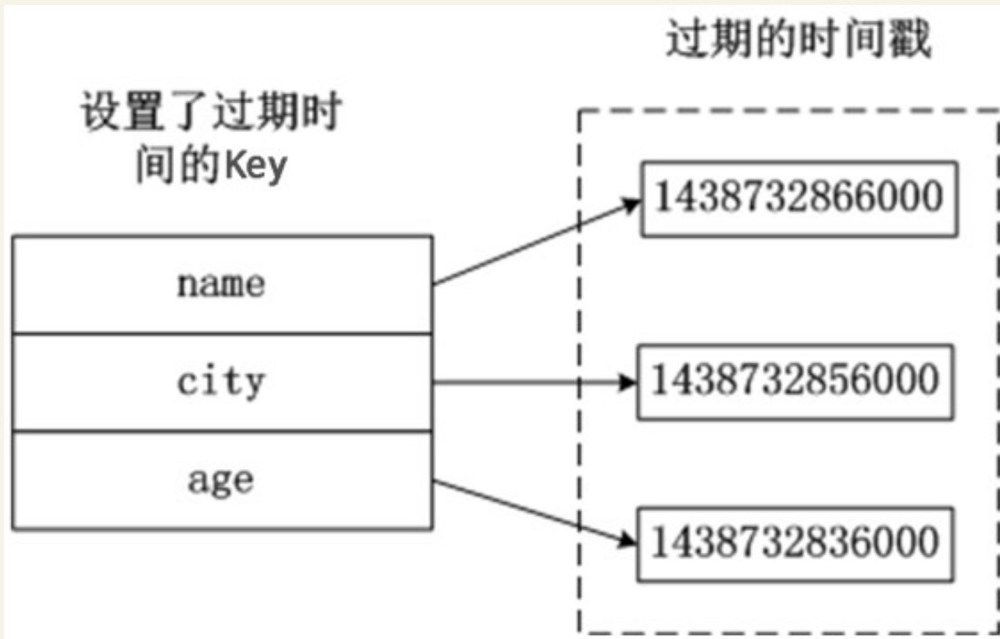
Redis用如下的步骤检查某个Key是否过期。
（1）检查Key是否存在于设置了过期时间的Key中，如果存在，则取出过期时间。
（2）检查当前时间的时间戳是否大于Key的过期时间，如果是的话，则表示Key已过期，否则，Key未过期。
设置了Key的过期时间后，Redis采用下面的两种策略删除过期的Key。
1．惰性删除
Redis操作Key时，如果发现Key已经过期了，则删除过期的Key。
这种策略的好处是不占用过多的CPU资源，只有Redis操作Key时才检查，保证不会在其他Key上消耗CPU资源。
坏处是只有操作Key时才检查该Key是否过期，这样过期的Key的数据依然长期存储在内存中，占据内存的空间。
使用惰性删除策略时，如果内存中存在大量的过期的Key，而这些Key没有被访问过会占用大量的内存空间，操作系统无法释放内存。这种删除策略对于数据都存储于内存的Redis来说非常糟糕。
如果App后台把Redis作为一个存储系统，App业务当中肯定会存储一些冷数据，例如一些不活跃的用户数据，这些用户注册后不再打开App，就变成冷数据。这些冷数据的特点是当写入后很长时间内都不会被访问。如果只依赖于Redis的惰性删除，这部分冷数据一直占用着内存，没法清理内存空间。
2．定期删除
Redis为了补救惰性删除策略的不足，释放更多的内存，也对过期的Key同时采用了定期删除的策略。
定期删除策略是每隔一段时间，Redis检查所有设置了过期时间的Key，如果发现当前时间已经超过了该Key的过期时间，就把Key和对应的数据删除。为了保证Redis的高性能，Redis执行定期删除策略的频率和时长都有限制。
6.7.4. 集群¶
1.客户端分片¶
不推荐使用，可运维性差
2.Twemproxy¶
Twemproxy是由Twitter开源的Redis代理，其基本原理是：Redis客户端把请求发送到Twemproxy，Twemproxy根据路由规则发送到正确的Redis实例，最后Twemproxy把结果汇集返回给客户端。
Twemproxy通过引入了一个代理层，将多个Redis实例进行统一管理， 使Redis客户端只需要在Twemproxy上进行操作，而不需要关心后面有多少个Redis实例， 从而实现了Redis的集群。
Twemproxy集群架构如图
Twemproxy集群架构 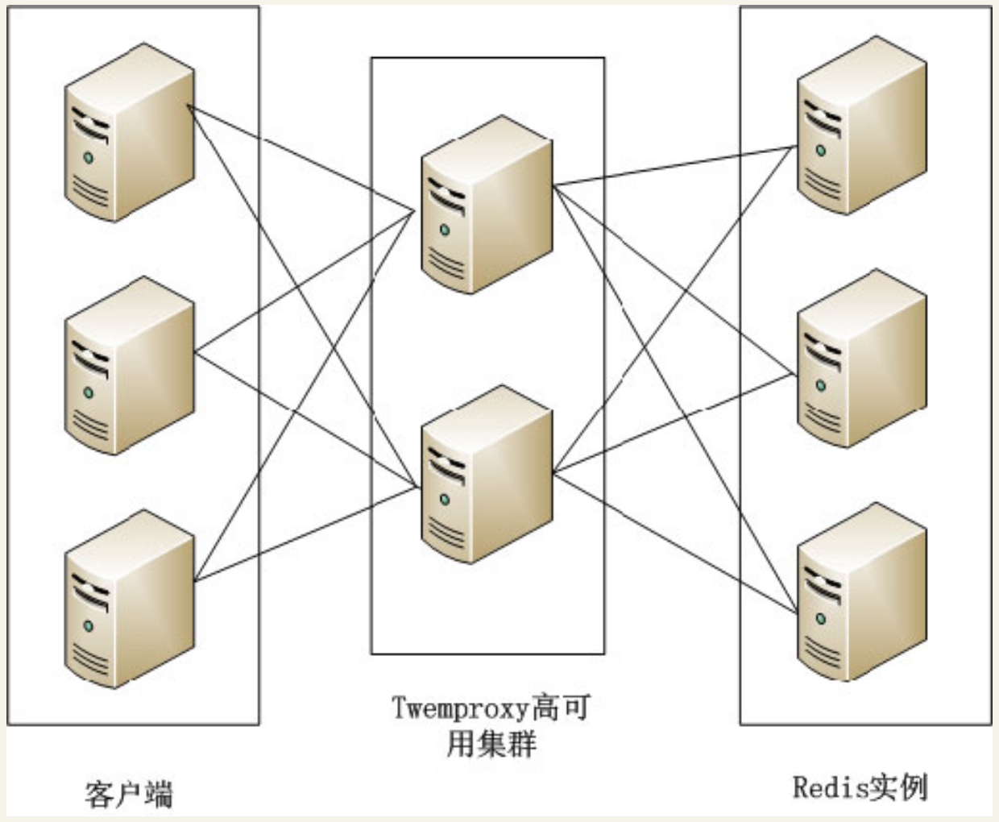
Twemproxy的优点如下。
·客户端像连接Redis实例一样连接Twemproxy，不需要改任何的代码逻辑。
·支持无效Redis实例的自动删除。
·Twemproxy与Redis实例保持连接，减少了客户端与Redis实例的连接数。
Twemproxy有如下不足。
·由于Redis客户端的每个请求都经过Twemproxy代理才能到达Redis服务器，这个过程中会产生性能损失。
·没有友好的监控管理后台界面，不利于运维监控。
·最大的问题是Twemproxy无法平滑地增加Redis实例。对于运维人员来说，当因为业务需要增加Redis实例时工作量非常大。
wemproxy作为最被广泛使用、最久经考验、稳定性最高的Redis代理，在业界被广泛使用。
3.Codis¶
Twemproxy不能平滑增加Redis实例的问题带来了很大的不便，于是豌豆荚自主研发了Codis，一个支持平滑增加Redis实例的Redis代理软件，其基于Go和C语言开发，并于2014年11月在Github上开源。
Codis包含下面4个部分。
·Codis Proxy：Redis客户端连接到Redis实例的代理，实现了Redis的协议，Redis客户端连接到Codis Proxy进行各种操作。Codis Proxy是无状态的，可以用Keepalived等负载均衡软件部署多个Codis Proxy实现高可用。
·CodisRedis：Codis项目维护的Redis分支，添加了slot和原子的数据迁移命令。Codis上层的Codis Proxy和Codisconfig只有与这个版本的Redis通信才能正常运行。
·Codisconfig：Codis管理工具。可以添加删除CodisRedis节点，添加删除Codis Proxy，数据迁移等操作。另外，Codisconfig自带了HTTP server，里面集成了一个管理界面，方便运维人员观察Codis集群的状态和进行相关的操作，极大提高了运维的方便性，弥补了Twemproxy的缺点。
·ZooKeeper：分布式的、开源的应用程序协调服务，是Hadoop和Hbase的重要组件，其为分布式应用提供一致性服务，提供的功能包括：配置维护、名字服务、分布式同步、组服务等。Codis依赖于ZooKeeper存储数据路由表的信息和Codis P roxy节点的元信息。另外，Codisconfig发起的命令都会通过ZooKeeper同步到Codis P roxy的节点。
Codis的架构如图 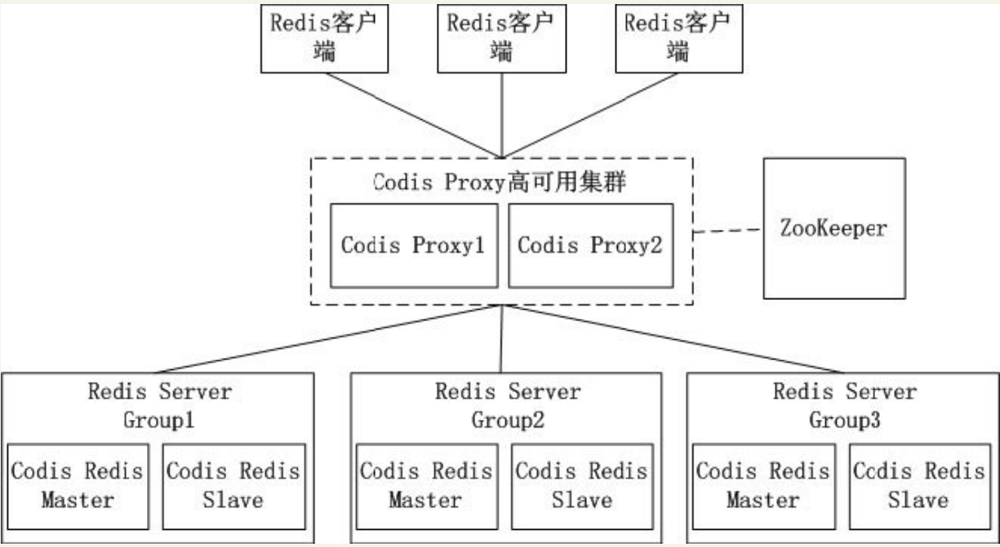
Codis引入了Redis Server G roup，其通过指定了一个主CodisRedis和一个或多个从CodisRedis，实现了Redis集群的高可用。当一个主CodisRedis挂掉时，Codis不会自动把一个从CodisRedis提升为主CodisRedis，这涉及到数据的一致性问题（Redis本身的数据同步是采用主从异步复制，当数据在主CodisRedis写入成功时，从CodisRedis是否已读入这个数据是没法保证的），需要管理员在管理界面上手动把从CodisRedis提升为主CodisRedis。
如果觉得麻烦，豌豆荚也提供了一个工具Codis-ha，这个工具会在检测到主CodisRedis挂掉的时候将其下线并提升一个从CodisRedis为主CodisRedis。
Codis最大的优势在于支持平滑增加（减少）Redis Server Group（Redis实例），能安全、透明地迁移数据，这也是Codis有别于Twemproxy等静态的分布式Redis解决方案的地方。
4.Redis 3.0集群¶
Redis 3.0集群采用了P2P的模式，完全去中心化。Redis把所有的Key分成了16384个slot，每个Redis实例负责其中一部分slot。集群中的所有信息（节点、端口、slot等），都通过节点之间定期的数据交换而更新。
Redis客户端在任意一个Redis实例发出请求，如果所需数据不在该实例中，通过重定向命令引导客户端访问所需的实例。
Redis 3.0集群的工作流程如图 
如上图所示Redis集群内的机器定期交换数据，工作流程如下。
1.Redis客户端在Redis2实例上访问某个数据。
2.在Redis2内发现这个数据是在Redis3这个实例中，给Redis客户端发送一个重定向的命令。
3.Redis客户端收到重定向命令后，访问Redis3实例获取所需的数据。
Redis 3.0的集群方案有以下两个问题。
1.一个Redis实例具备了“数据存储”和“路由重定向”，完全去中心化的设计。这带来的好处是部署非常简单，直接部署Redis就行，不像Codis有那么多的组件和依赖。但带来的问题是很难对业务进行无痛的升级，如果哪天Redis集群出了什么严重的Bug，就只能回滚整个Redis集群。
2.对协议进行了较大的修改，对应的Redis客户端也需要升级。升级Redis客户端后谁能确保没有Bug？而且对于线上已经大规模运行的业务，升级代码中的Redis客户端也是一个很麻烦的事情。
综合上面所述的两个问题，Redis 3.0集群在业界并没有被大规模使用。
5.云服务器上的集群服务¶
国内的云服务器提供商阿里云、UCloud等均推出了基于Redis的云存储服务。这个服务的特性如下。
1．动态扩容¶
用户可以通过控制面板升级所需的Redis存储空间，扩容的过程中服务部不需要中断或停止，整个扩容过程对用户透明、无感知，这点是非常实用的，在前面介绍的方案中，解决Redis平滑扩容是个很烦琐的任务，现在按几下鼠标就能搞定，大大减少了运维的负担。
2.数据多备¶
数据保存在一主一备两台机器中，其中一台机器宕机了，数据还在另外一台机器上有备份。
3.自动容灾¶
主机宕机后系统能自动检测并切换到备机上，实现服务的高可用。
4．实惠¶
很多情况下为了使Redis的性能更高，需要购买一台专门的服务器用于Redis的存储服务，但这样子CPU、内存等资源就浪费了，购买Redis云存储服务就很好地解决了这个问题。
有了Redis云存储服务，能使App后台开发人员从烦琐运维中解放出来。App后台要搭建一个高可用、高性能的Redis服务，需要投入相当的运维成本和精力。如果使用云存储服务，就没必要投入这些成本和精力，可以让App后台开发人员更专注于业务。
6.7.5. 持久化¶
Redis是一个支持持久化操作的内存数据库，通过持久化机制把内存中的数据保存在硬盘文件。当Redis重启后通过把硬盘文件重新加载到内存，就能达到恢复数据的目的。
Redis常用的持久化机制有下面两种。
· RDB
· AOF
RDB¶
RDB是Redis默认的持久化方式，
这种方式是按照一定的时间周期策略把内存的数据以快照的形式写入到硬盘的二进制文件。
RDB默认的数据文件是dump.rdb，该数据文件能在配置文件中修改。
下面是Redis配置文件中有关RDB的主要参数。
dbfilename dump.rdb #快照的文件名
dir /var/lib/redis/6379 #快照保存的路径
save 900 1 #当有1 个数据被改变时，900 秒刷新到硬盘一次
save 300 10 #当有10 个数据被改变时，300 秒刷新到硬盘一次
save 60 10000 #当有10000 数据被改变时，60 秒刷新到硬盘一次
执行RDB持久化的过程如图 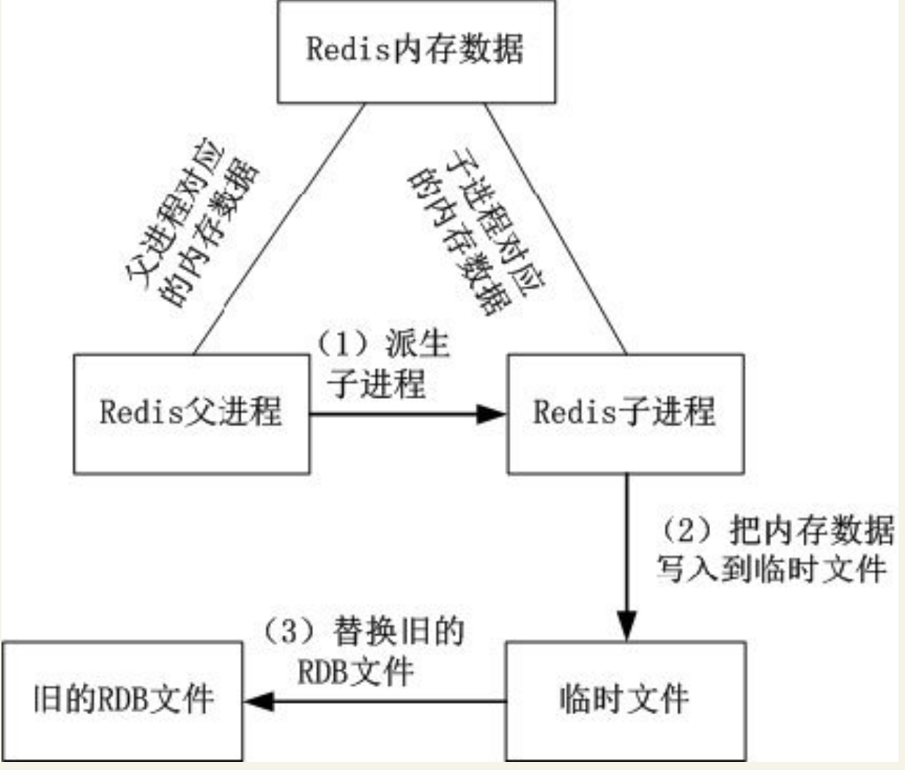
RDB持久化的过程如下。
1．根据配置文件中执行RDB的时机，Redis调用fork生成子进程，这样就有了Redis的子进程和父进程。
2．父进程继续处理客户端发送的请求，子进程把其内存的数据写入到临时文件。由于Linux操作系统的特性，父进程和子进程会共享相同的内存空间，所以子进程的数据是和fork时Redis中内存的数据一样的。
3．子进程写入临时文件完毕后，用临时文件替换RDB的数据文件，子进程退出。
需要注意的是，每次持久化的过程都是把Redis内存数据完整地写入到磁盘，并不是只写入修改的数据，因此，如果Redis内存数据量大，那么就会造成频繁的写入操作，可能会严重影响性能。
由于RDB的方式是每隔一段时间才把内存数据持久化， 如果Redis意外退出会丢失最后一次持久化后的所有数据。为了防止这个问题， 可以采用下面介绍的另外一种持久化方式—AOF。
AOF¶
使用AOF的持久化方式，Redis会把每个写入命令通过write函数追加到持久化文件中（默认文件是Appendonly.aof），当Redis重启的时候会通过执行持久化文件的写命令重建内存数据。
由于Linux会把对文件的写入数据通过buffer缓冲，因此Linux可能不是立即写入到文件，有丢失数据的风险。在Redis的配置文件中，可以通过相应的配置选项告诉Redis需要通过fsync函数强制Linux写入到磁盘的时机。
下面是Redis配置文件中有关AOF持久化的主要参数。
Appendonly no #是否开启AOF 的持久化方式
Appendfilename "Appendonly.aof" #AOF 文件的名称，默认为Appendonly.aof
# Appendfsync always #每次收到写命令就立即强制写入到磁盘，能保证完全持久化，但速度也最慢，不推荐
Appendfsync everysec #每秒钟强制写入磁盘一次，在性能和持久化方面做了很好的折中，推荐
# Appendfsync no #完全依赖Linux，性能最好，但持久化没保证
用AOF的持久化方式慢慢会出现一个问题：AOF文件会变得越来越大。 例如，有一个写命令“set n um 1”，然后执行了100次写命令“incr num”，这时num的值为101， 这100次“incr”操作都会记录到持久化文件，但重建内存数据时， 实际只需要执行“set nu m 101”就可以了，无须先执行“set num 1”再执行100次“incr num”。
为了压缩AOF文件，Redis提供了bgrewriteaof命令，Redis收到这个命令后会以类似创建RDB文件的方式将内存数据以命令的形式保存到临时文件中，最后替换原文件。
下面是Redis配置文件中有关bgrewriteaof命令的主要参数。
no-Appendfsync-on-rewrite yes #在日志重写时，不进行命令追加，而将其放在缓冲区中
auto-aof-rewrite-percentage 100 #当前AOF 文件大小是上次日志重写的AOF 文件大小的二倍时，自动启动新的日志重写过程。
auto-aof-rewrite-min-size 64mb #当前AOF 文件重写的最少值
当“auto-aof-rewrite-percentage”和“auto-aof-rewrite-min-size”这两个条件都满足时，才会触发bgrewriteaof命令。
执行bgrewriteaof命令过程如图 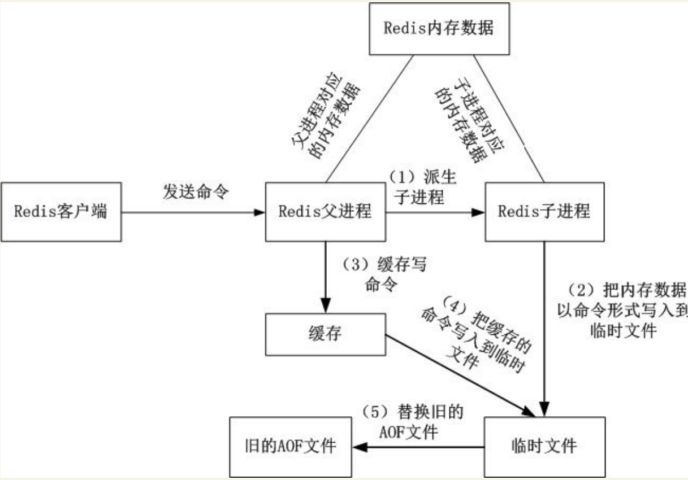
执行bgrewriteaof命令过程如下。
1．Redis调用fork生成子进程，这样就有了Redis的子进程和父进程。
2．父进程继续处理客户端发送的请求，子进程把内存数据以命令的形式写入到临时文件。由于Linux操作系统的特性，父进程和子进程会共享相同的内存空间，所以子进程的数据是和fork时Redis中内存的数据一致的。
3．在子进程写临时文件的过程中，父进程把收到的写命令缓存起来。
4．子进程写入临时文件完毕，子进程通知父进程，父进程把缓存中的写入命令追加到临时文件。
5．临时文件替换AOF文件，父进程继续把新增的写命令追加到AOF文件，子进程退出。
6.7.6. 故障排除案例¶
Redis崩溃的故障¶
故障现象： 在测试某个业务的过程中，发现Redis偶尔会崩溃。
查找故障： 这个现象不是经常会出现，查找Redis的错误日志也没有记录什么消息。该业务写Redis的操作非常频繁，Redis占用的内存高，操作系统已经使用了Swap分区。
原因分析：这是由于Redis的持久化文件过大引起的故障。 Redis的持久化文件过大并要对其进行读写时，操作系统把这个文件加载到物理内存中。加载持久化文件所占用的内存加上Redis本身占用的内存，操作系统会认为Redis使用了两倍的内存。这样就会造成了当如果Redis实际占用了大概一半的物理内存时，操作系统就认为内存不足，开始使用liunx的Swap分区，造成Redis不稳定甚至是崩溃。
经验教训： 持久化操作需要合理地规划内存。